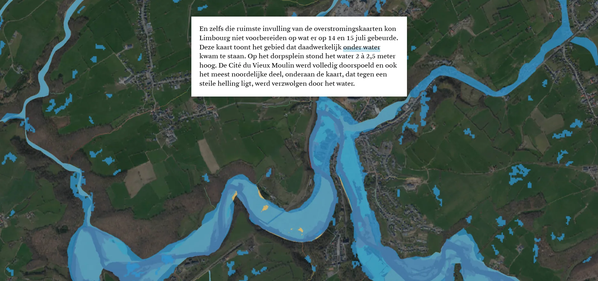
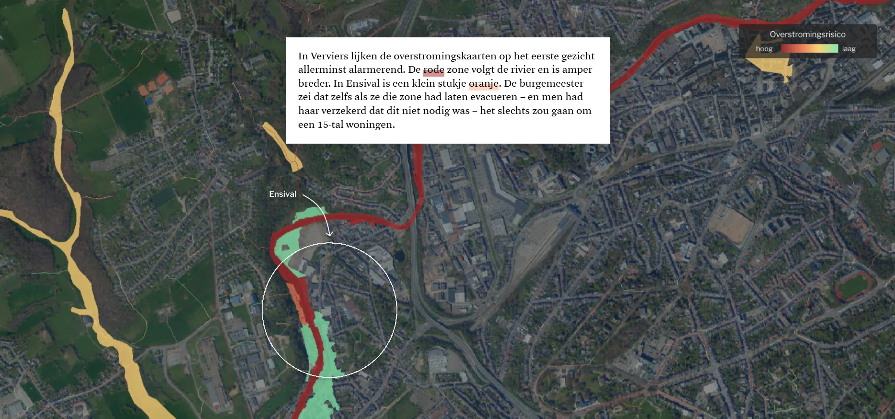
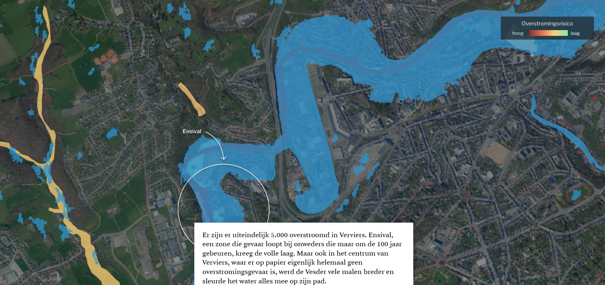

A year after the floods in the Vesdre valley, which claimed 39 lives, we held the official flood maps up against the actual damage.


The gap was enormous: areas coloured in as 'très faible' (very low) risk were metres under water. For three badly hit municipalities (Limbourg, Trooz and Verviers) we built scrollytelling maps that step by step lay the risk zoning (red, orange, yellow, green) next to the areas that actually flooded (blue). Photography by Sébastien Van Malleghem shows the devastation a year later.

Made with
Made by
- Peter De Lobel
- Text
- Andy Stevens
- Data visualisation
- Tina Boeykens
- Data visualisation
- Sébastien Van Malleghem
- Photography